Coral cleanup, darker portrait masonry, submerged stone backing, twelve varied bubble paths and a small opening clam. Existing actors, frame geometry, board cells and shared controls are preserved. Review scene only; not merged or installed into gameplay.
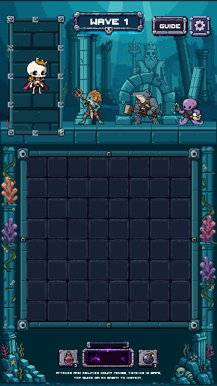
The 24-second loop uses 288 lossless Unity renders at 12 frames/sec. Movement stays on whole native pixels; bubble rings rise, drift and pop. Clam releases occur while the shell is open.
720×1280 still · 1080×1920 still · 1080×2400 tall still · GIF motion preview · Verification report
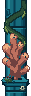
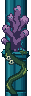
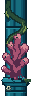
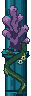
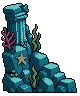
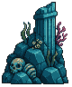
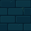
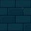
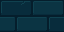
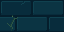
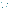
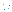
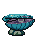
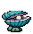
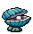
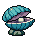
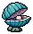